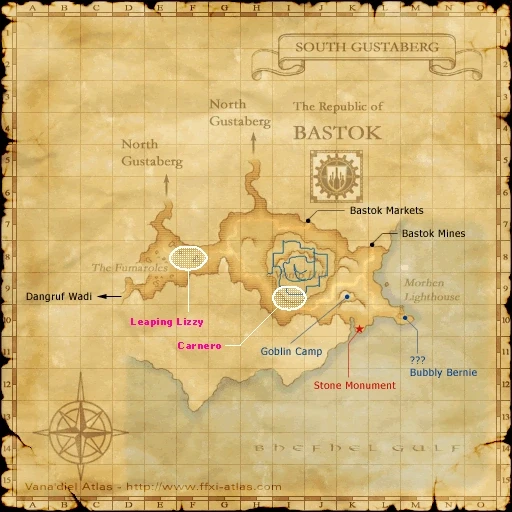
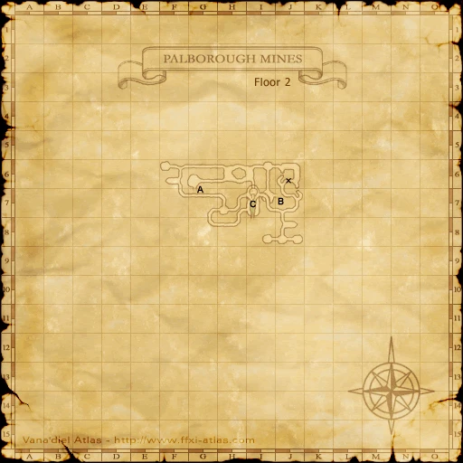
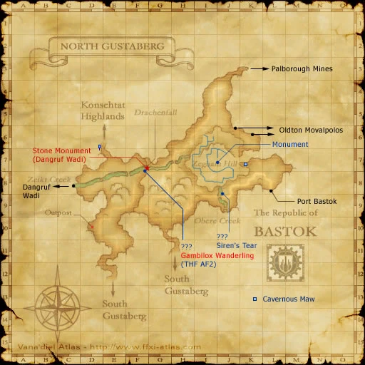

Before you begin
Be allied with Bastok, have Rank 1, and finish the preceding required story steps. Raise Rank Points if the mission is not offered.
Walkthrough
- Accept the mission.
- Collect one each of Fetich Head, Fetich Torso, Fetich Arms and Fetich Legs from Quadav. Palborough Mines is the standard hunting destination.
- Trade all four pieces together to a Bastok mission guard.
Important notes
- You need four distinct parts, not four copies of one part.
Locations and references
| Place / NPC | Location | Reference |
|---|---|---|
| Hunting area | Palborough Mines, entered from North Gustaberg (K-3) | Location reference |
Route maps







Completion and reward
Rank 2; 1,000 gil
Area maps
Open a zone below, then select a map to enlarge it. Match the named floors and grid coordinates in the steps; these are reference area maps, not a live position tracker.
Palborough Mines


North Gustaberg


References
HorizonXI Wiki: Bastok 1-3 · LandSandBoat mission definition
The route summary covers the original story. Other servers’ extra rewards, level-cap settings and Trust rules are not promises of Zenith behavior. Confirm battlefield entry conditions in game.
Additional level-75 reference
|
Recommended: Level 15+ job, preferably Thief.
Walkthrough
- Accept the mission and head to Palborough Mines in the northeast corner of North Gustaberg. This has the densest population of low-level Quadav to find the Fetich items. The Fetich items may also drop from Quadav in Konschtat Highlands, Pashhow Marshlands and Beadeaux.
- Kill Quadav until you get the items: Fetich Head, Fetich Arms, Fetich Torso, and a Fetich Legs. These items can also be purchased from the Auction House.
- After getting the four parts go back to any Bastok Gate Guard and trade him the four parts to complete the mission.
Game Description
- Mission Orders
- Hunt the Quadav in the Palborough Mines and collect the four parts of a Quadav fetich.
Adapted from Eden Wiki: Fetichism · Contributors and history · CC BY-SA 4.0. Revision 8637. Layout, links and optional background text adapted for Zenith.